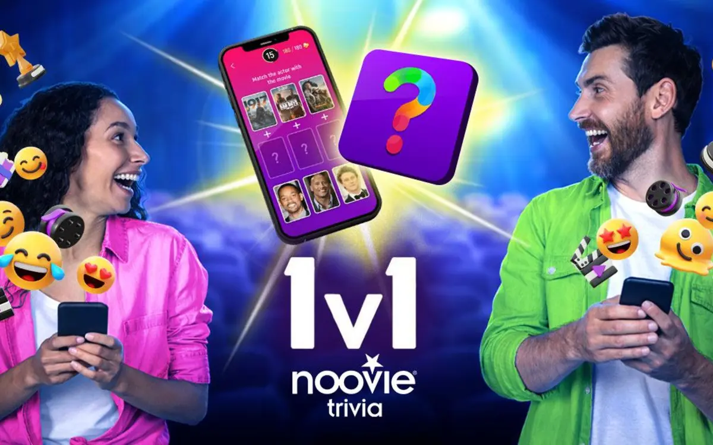

Full article · Workinman Interactive
Why Noovie Trivia Is More Than (Just) a Quiz App
A product story explaining how game modes, fresh content, social play, and real-world rewards extend moviegoing beyond the theater.

Going to the movies has never been entirely about the film itself. It’s the trailers, popcorn, and viewer engagement just before the lights dim. All of it, each and every part, shapes the experience. Anyone can kick their feet up and throw a movie on at home. It’s the intricate blend of ritual and entertainment that makes theaters feel different from streaming at home.
Now, with moviegoing on the rise once more, that ecosystem is expanding beyond theaters and into the digital space. The Noovie Trivia App takes the familiar idea of pre-show trivia and transforms it into a platform that lives beyond the theater walls. It’s part competition, part habit. For film fans, it’s a daily extension of the cinematic world. A way to really keep that energy alive, long after the credits roll.
More Than Just Questions
It’s easy to think of most trivia apps as interchangeable. They all do the same thing, right? A list of questions, a scoreboard, maybe some categories, and that’s all. Sure, that might be the case for many apps. But the Noovie Trivia app shows how much more a well-built trivia experience can deliver.
At its heart, Noovie is a movie trivia game designed around its breadth, usability, and—maybe most importantly—replayability. Players can dive into decades of film history, encountering questions about golden-age hits, 80s cult classics, and modern blockbusters. Every round is quick and approachable, meaning you can play whenever and wherever’s convenient for you.
The structure is deliberately varied. Multiplayer modes allow fans to test themselves against others in real time, a reminder that movie knowledge is often most fun when it’s shared. Solo game modes provide a steadier, more individualized experience, while daily quizzes incentivize players to return. These mechanics mirror some of the best practices in trivia game development, where engagement relies less on overcomplexity and more on familiarity and rhythm. Crucially, the content isn’t static. Trivia apps rise and fall on freshness. Noovie meets that challenge with a constant flow of new questions, updated categories, and even fun facts tucked between games. That steady cadence makes the app more than a one-time use. It becomes part of a daily loop, a habit reinforced by both design and curiosity: what new questions will appear today?
The August Update: What’s New?
Like any good app, Noovie Trivia evolves with its audience. The early August update is a prime example of how incremental changes can reshape the player experience in meaningful ways.
Yes, the release included expected technical improvements: bug fixes that smoothed out rough edges, and quality-of-life adjustments that made menus cleaner and gameplay more stable. Those behind-the-scenes tweaks matter: they ensure players can stay focused on the trivia itself instead of dealing with frustrations that break immersion.
But the real centerpiece of the update was the introduction of the Weekly Prize Contest. For the first time, players could translate their leaderboard performance into real-world rewards: free movie tickets. The mechanism is simple. Earn “popcorn” points through play, climb the leaderboard, and land in the top ranks to claim your prize.
By tying digital engagement directly to the theater experience, Noovie deepens the connection even further between trivia and cinema. Winning no longer means just topping a leaderboard. It can mean securing your next night at the movies. It’s clever, and a win-win situation: play more trivia, see more films, and return to the app with a richer set of references in mind. It’s a cycle that benefits both players and the broader culture of moviegoing. And isn’t that the whole point?
A Cinephile Companion Reinvented
As are all other things, movie culture itself is shifting. In recent years, theaters have been regaining momentum, streaming platforms have continued to shape viewing habits, and now, audiences are finding new ways to engage with stories outside the theater. In this landscape, apps like Noovie Trivia aren’t just sources of entertainment, they’re connectors.
The app reframes what it means to be part of the cinematic community. Instead of waiting until your next theater trip to test your knowledge, you can participate anytime. On your bus commute, during a lunch break, or while chatting with friends. The result is more than an app. It’s a companion that expands the idea of cinema into something lasting.
For lifelong fans, that means the pre-show doesn’t end when the lights dim. It continues in your pocket when you leave, in the form of a daily challenge, a multiplayer showdown, or a leaderboard climb that could win you your next ticket. And for developers, it’s a reminder of what mobile trivia game development can achieve when design and audience needs align.
Noovie Trivia is available free for iOS and Android
About this project
See the assignment, process, and Paul’s contribution.
Paul shaped the product brief and studio feedback into the published audience-centered article.
Related work
Continue through the subject.

Noovie Trivia Gets Faster With Fresh Content and New 1v1 Battles
A concise release story turning performance improvements, QR-based challenges, and new social features into an audience-centered update.

Making Digital Board Games Feel Real: 8 Tips
An eight-part guide to preserving rhythm, agency, atmosphere, solo play, and long-term interest when board games move to screens.

Games for Brands: What to Do, What to Avoid
A practical guide to brand guidelines, IP constraints, creative approvals, and risk in playable brand experiences.